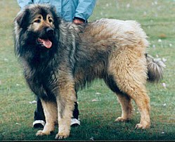

| Šarplaninac  |
|
|---|---|
| Other names | lirski Ovčar
Illyrian Shepherd Dog Jugoslovenski Ovčarski Pas - Šarplaninac Yugoslavian Shepherd Dog - Sharplanina Jugoslovenski Ovčarski Pas Yugoslavian Shepherd Dog Sarplaninac Sharplanina |
| Origin | Albania former Yugoslavia North Macedonia Serbia Kosovo |
| Distribution | Šar Mountains |
| Traits | |
| Height | Males 62 cm (24 in) Females 58 cm (23 in) |
| Weight | Males 35-45 kg (75-100 lb) Females 30-40 kg (65-90 lb) |
| Coat | double; guard hair long, flat and coarse, undercoat thick and fine |
| Colour | Any solid colour, without white markings; iron grey or dark grey preferred |
| Kennel club standards | |
| Kinološki Savez Republike Srbije | |
| Fédération Cynologique Internationale | |
| Dog (domestic dog) | |
The Šarplaninac[a] or Sharr dog is a breed of
dog of livestock guardian type. It is named for the Šar Mountains or Šar
Planina range in the Balkans, where it is principally found.
It was recognised by the Fédération Cynologique Internationale as the
Illyrian Shepherd Dog or Ilirski Ovčar from 1939 until 1957,
when the name was changed to
Yugoslavian Shepherd Dog - Sharplanina or Jugoslovenski Ovčarski Pas -
Šarplaninac.
In Ottoman times, the dogs moved with the flocks of sheep, spending the
summer in the area of the Šar Mountains and the winter in Thessaly, where
they were known as Greek Shepherd Dogs.
Other names
The origins of the Šarplaninac are not known. It was traditionally used to
guard cattle or sheep.
In the transhumant system of management, livestock was moved twice a year,
to the high mountain pastures for the summer, and to the warmer plains for
the winter.
In the southern Balkans, very large numbers of sheep were moved in this way,
accompanied by men and dogs.
The Šarplaninac is found mainly in the Šar Mountains, where it is thought to
have originated and from which the name 'Šarplaninac' derives.
It is also distributed in the areas of the Jablanica, Korab and Pelister
mountains.

The Šarplaninac is a large and strongly built dog. The body is slightly
longer than the height at the withers, and the front legs account for
approximately 55% of the height.
The head is large but proportional to the
body, with dark eyes.
It is a robust, well-proportioned dog with plenty of
bone, of a size that is well above the average and with a thick, long,
rather coarse coat that emphasises the short-coupled appearance.
Dogs weigh some 35-45 kg, bitches about 5 kg less. The average
height at the withers is 62 cm for dogs and 58 cm for bitches.
It is
always solid in colour: fawn, iron grey, white or almost black; usually
sable or grey with darker "overalls" on the head and back, the undercoat
being paler.
The colour need not be completely uniform, and most Šarplaninac
have several different shades of the same colour fading into one another.
The dogs may be expected to live for some 11-13 years.